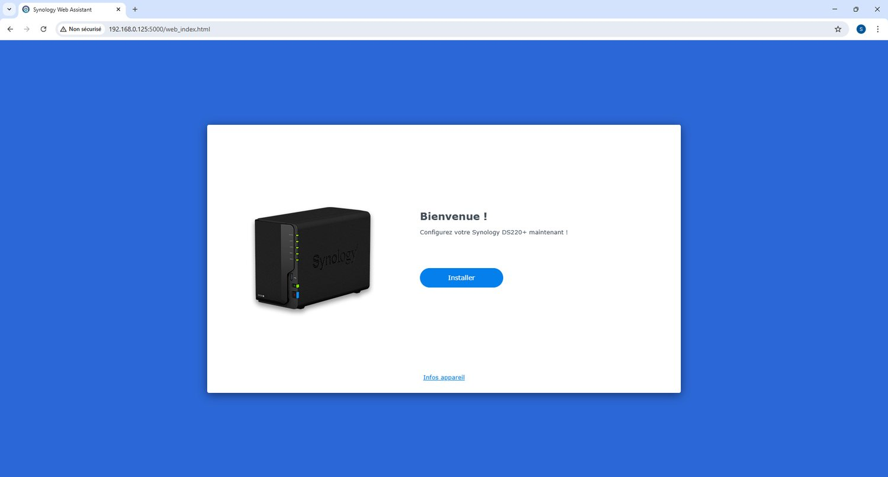
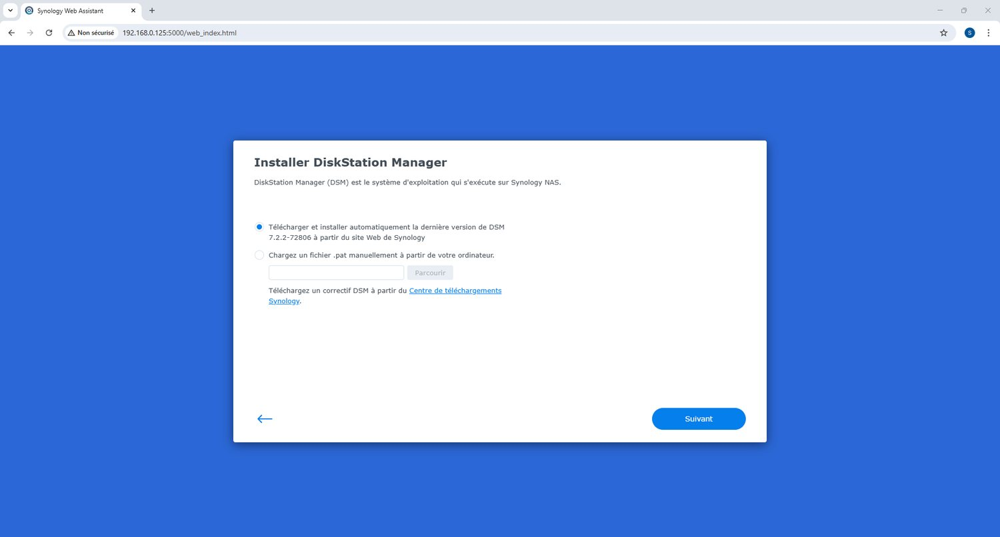
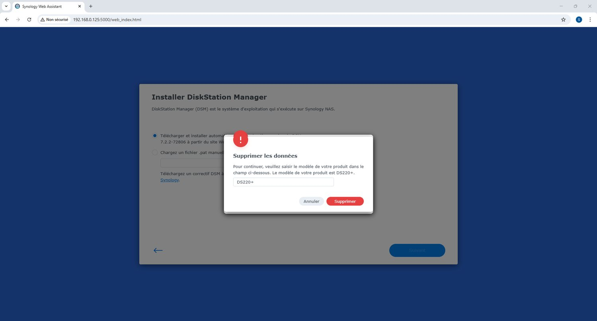
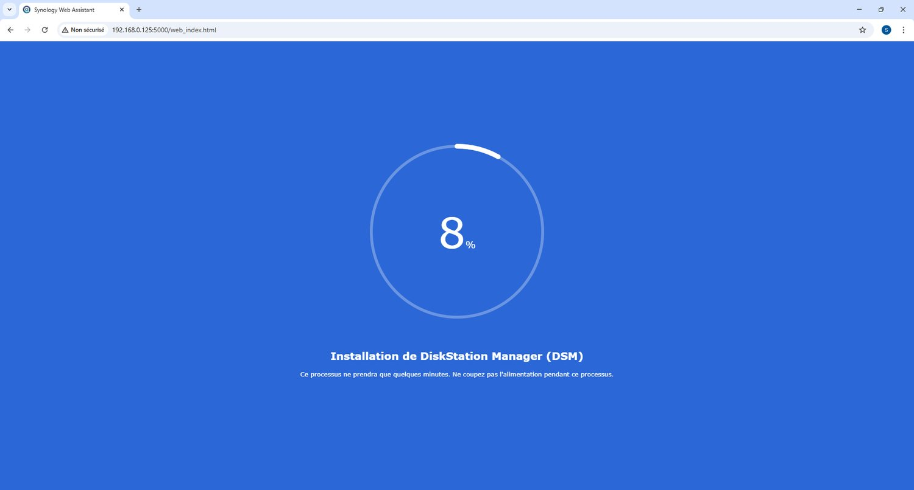
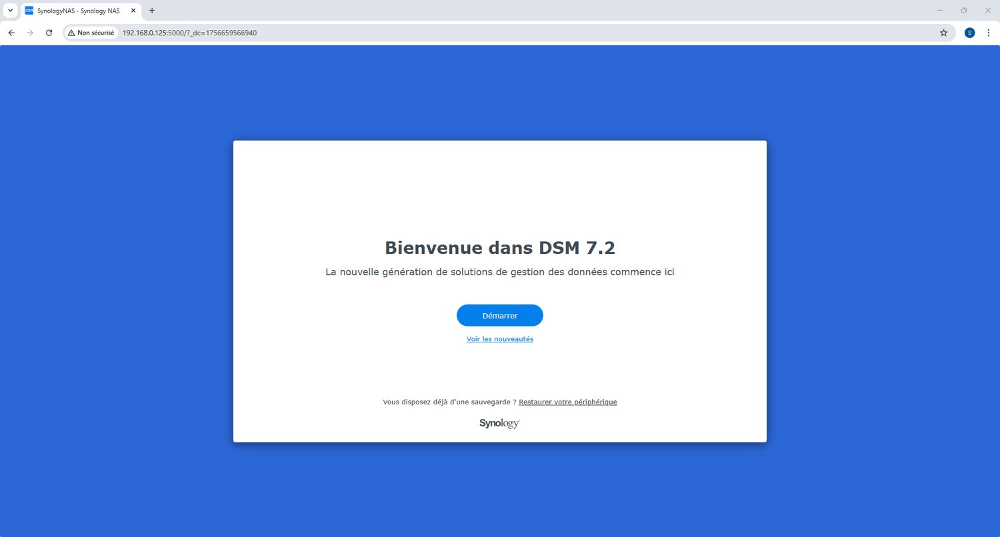
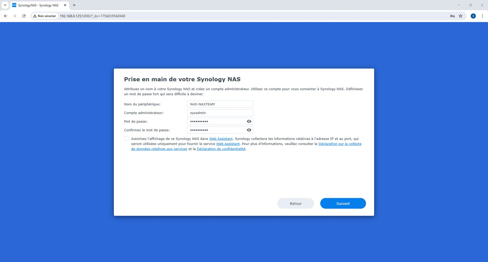
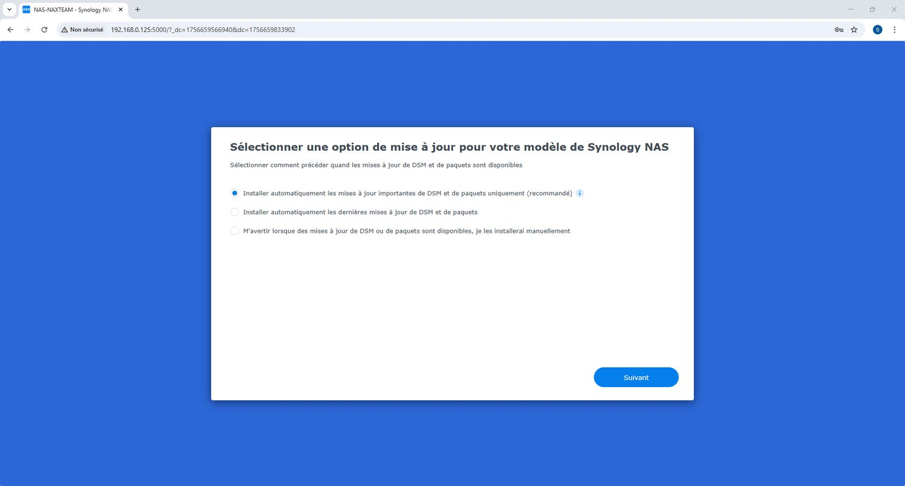
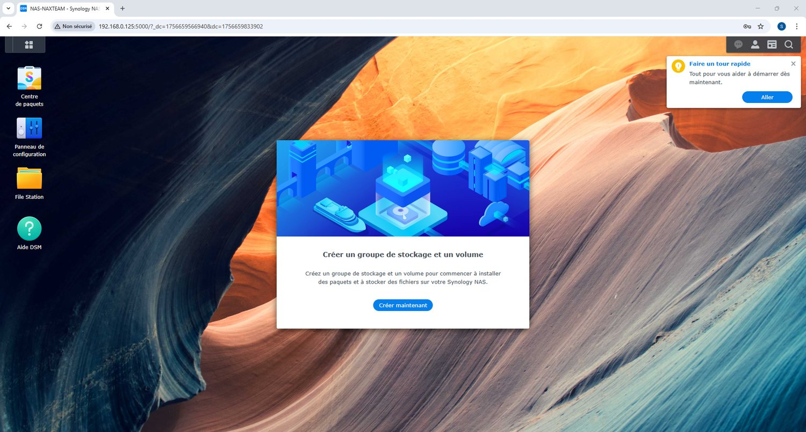

Étape 1 sur 2
Installation de DSM sur le Synology DS220+
De la première connexion au NAS jusqu'à l'accès à l'interface DSM 7.2.
Principe
DSM (DiskStation Manager) est le système d'exploitation des NAS Synology. Il s'administre depuis un navigateur et permet de gérer le stockage, les utilisateurs et les applications.
1. Première connexion
Après avoir branché le NAS au réseau, saisir son adresse IP dans un navigateur puis lancer l'installation.
2. Installer DSM
- Choisir « Télécharger et installer automatiquement la dernière version de DSM ».
- Continuer.
- Saisir le modèle du NAS pour confirmer l'effacement d'une éventuelle ancienne configuration.
- Patienter pendant l'installation et le redémarrage.
3. Configuration initiale
- Cliquer sur « Démarrer ».
- Renseigner le nom du périphérique, le compte administrateur et son mot de passe.
- Choisir « Installer automatiquement les mises à jour importantes de DSM et des paquets uniquement ».
Captures








Savoir-faire mobilisés
- Synology DSM
- Administration NAS
- Mises à jour